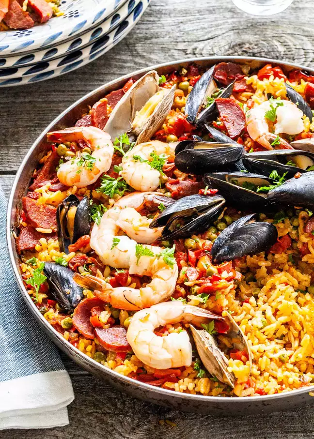

Seafood Paella

This saffron-infused paella recipe is loaded with mussels, clams, and shrimp. Grill it in your biggest skillet for best flavor (no special pan required). Paella serves a crowd for your next cookout!
Ingredients
- 4 cups fish stock
- 1 tsp saffron threads
- 2 tsp olive oil
- 250g firm fish filets (such as blue eye), cut into 2cm pieces
- 1 brown onion,finely chopped
- 2 garlic cloves, crushed
- 2 cups arborio rice
- 2 tomatoes, peeled, deseeded, diced
- 2 tsplpatrika
- 500g medium green king prawns, peeled, deveined
- 150g baby squid, cleaned, cut into 1 cm-thick rings
- 12 mussells, scrubbed, debearded
- 2/3 cup frozen peas
Steps
- Combine stock, 1 cup cold water and saffron in a medium saucepan over medium heat. Bring to the boil. Cover and reduce heat to medium-low. Keep at a simmer.
- Meanwhile, heat 1 tablespoon oil in a 24cm (base) non-stick frying pan over medium-high heat. Add fish and cook for 1 minute each side or until light golden. Transfer to a plate. Add remaining 1 tablespoon oil to pan. Add onion and garlic. Cook for 5 minutes or until soft. Add rice, tomatoes and paprika. Stir to combine. Using a spoon, spread mixture evenly over base of pan.
- Add half the stock mixture to frying pan and bring to the boil over high heat. Shake pan to spread mixture across pan (do not stir). Reduce heat to medium. Cook, uncovered, without stirring, for 10 minutes or until stock is absorbed.
- Add prawns, squid and mussels, pressing into rice mixture. Add 1/2 cup stock mixture and cook until all liquid is absorbed. Repeat with remaining stock mixture, 1/2 cup at a time, adding fish and peas with the last 1/2 cup stock (this will take 15 to 20 minutes). Remove from heat. Stand, covered, for 5 minutes. Season with pepper. Serve.